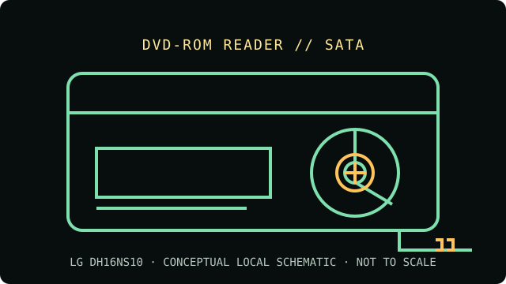

[ INDIVIDUAL COMPONENT // OPTICAL DRIVES ]
LG DH16NS10
16× internal SATA DVD-ROM reader. This model is documented as a reader, not a recorder. Match the complete model and revision label to source documentation before using the recorded-media compatibility notes.

IDENTIFICATION: LG DH16NS10 · confirm complete model suffix, hardware revision and firmware before assigning capabilities.
Verified specifications
| Catalog subcategory | DVD-ROM readers |
|---|---|
| Exact product identifier | LG DH16NS10 |
| Drive class | 16× internal SATA DVD-ROM reader |
| DVD read rate | DVD-ROM up to 16× |
| CD read rate | CD-ROM up to 52× |
| Supported formats | DVD-ROM, DVD±R, DVD±RW, DVD±R DL, DVD-RAM; CD-ROM, CD-R and CD-RW (read only). |
| Interface and mechanism | Internal 5.25-inch half-height SATA tray-loading drive; SATA data and power connectors. |
| Host compatibility | Requires SATA host data and power connections and a standard 5.25-inch bay. Check that system firmware supports optical boot if needed. DVD-Video playback depends on compatible OS software and region settings. It does not write or erase media. |
| Write capability | None — this is a read-only DVD-ROM drive. |
Optical-media preservation notes
Read-only drive capabilities do not establish the condition or authenticity of a disc. Preserve an untouched source, create verified images for access, and record the drive model, firmware, host software, media type and read errors.
- Handle by the edge or center hole; avoid writing or adhesive labels on the data side.
- Store discs in protective cases in a cool, dry and dark environment. Keep more than one independently verified copy of important content.
- Do not infer support for a specific recordable-media subtype from DVD-ROM support alone; follow the exact drive documentation and record test results.
Identification and host checks
- Verify the model suffix, revision, connector type and jumper setting on the physical unit; near-identical family members can differ.
- Requires SATA host data and power connections and a standard 5.25-inch bay. Check that system firmware supports optical boot if needed. DVD-Video playback depends on compatible OS software and region settings. It does not write or erase media.
- Separate optical reading from filesystem support, copy protection, region setting, codec availability and boot-firmware behavior; those depend on the complete host setup.
Model documentation and preservation sources
- LG DH16NS10 owner manualModel-family owner manual for setup, connection and drive operation.
- LG — DH16NS10 supportManufacturer support page for the DH16NS10 product identifier.
- Library of Congress — Sustainability of Digital FormatsPreservation context for ongoing access to digital content and format dependencies.
Maximum speeds are manufacturer or catalog ratings, not guaranteed speeds for every disc. Readability varies with disc condition, media type, firmware, host and software. This drive has no write function.